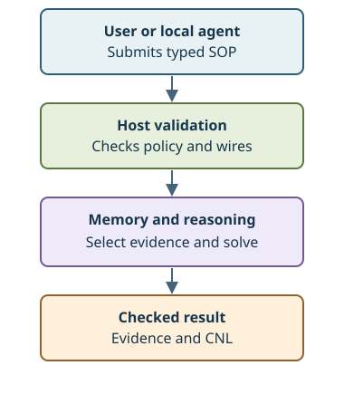

ChatSOP Documentation
ChatSOP lets a user submit a checked SOP circuit or ask a local agent to propose one. The circuit queries approved, time-aware knowledge; a selected reasoner produces a result with evidence and a CNL explanation. A model is a proposer, not the authority that publishes facts or declares proofs.
Documentation Map
| Platform | Research | Reference |
|---|---|---|
| OverviewProject roles, directories, and reading order. | TrainingModel roles, dataset responsibilities, and ML prerequisites. | SpecificationsAuthoritative project obligations and boundaries. |
| RuntimeLocal CLI execution, reviewed knowledge, and solver routing. | WikiCanonical definitions for project terminology. | Wire helpPer-wire keywords, value syntax, examples, effects, and authoring boundaries. |
Start in Platform with Overview and Runtime; use Research → Training for model and corpus requirements, then Wiki for exact terms. Reference → Specifications opens the design contracts; Wire help explains each declaration and operation.

Where work belongs
The checked parser and execution flow live in sop/; memory/ persists claims and sessions; reasoning/ links and solves; server/ holds the local agent and CLI. knowledge/ carries approved starter SOP, config/ holds runtime profiles, datasets/ owns seed and sourced cases, training/ owns training orchestration with its indispensable Python ML operations, models/<model>/<run>/ is the artifact convention, and eval/ separates evaluation from preserved reports. Original requirements remain in docs/legacy/.
Node.js .mjs files use built-ins by default. DS001-coding-style defines effective coding and test organization; tests/ holds behavioral tests, examples/ demonstrates circuits, and tools/ holds verification and data utilities. Wiki is the single canonical terminology source.
Product coding-agent workflows are kept under skills/: material-to-sop checks quoted drafts and candidate-rule probes; related skills address semantic ingestion and review, wiring and linking, memory and reasoning review, data quality and evaluation, and training safety/orchestration. Each skill retains its own executable resources and constraints.